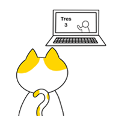
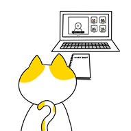
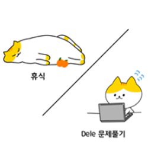

수업방식
Before class

수업 시간 전에 수업에서 활용할 문법, 어휘를 다룬 영상이 미리 제공됩니다.
During class

수업 시간에는 영상에서 배운 문법, 어휘를 바탕으로 원어민 선생님과 다양한
활동을 진행하며, 회화, 문법에서 나아가 문화적 맥락까지 함께 학습하게 됩니다.
After class

수업 시간 후에 과제는 없기에 휴식을 취하시면 됩니다.
*선택사항:DELE 취득을 목표로 한다면, 영상, 수업을 통해 학습한 내용을 복습할 수
있는 DELE 기출문제가 제공됩니다.
HOW AND WHY?
서윗은 영상을 활용하여 수업시간에 개념을 가르치는 시간을 최소화하고,
대화를 통해 개념을 실전에 적용할 수 있도록 연습 및 활용하는 시간을 최대화 합니다.
수업시간에는 사전 영상을 통해 접했던 문법 개념과 어휘를 원어민과 함께
다양한 상황별 활동에 적용 및 응용해보며 체득하게 됩니다.
이런 과정 속에서 스페인/라틴 문화 및 라이프스타일을 자연스럽게 학습할 수 있게 됩니다.
WITH?
영어 혹은 스페인어로 소통이 가능하신 분은 원어민 선생님과,
소통이 어려우신 분은 한국인 선생님 및 원어민 선생님과 함께 수업을 진행합니다.
REMEMBER!
서윗은 DELE 취득을 목표로 하지 않습니다. DELE를 기본 전제로 두기 때문입니다.
해당 자격증 취득을 원하시는 분에 한하여 수업시간마다 배우는 문법, 회화 내용을 기반으로 한
DELE 시험 기출 문제를 제공해드립니다.